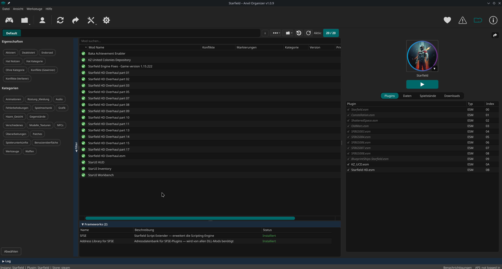

Der erste native Linux Mod Manager. Gebaut mit Python & Qt6 für CachyOS, Arch und jede Linux-Distribution.
Inspiriert von MO2. Neu gedacht für Linux.

Kein Wine, kein Proton-Wrapper. Anvil nutzt physische Symlinks statt USVFS und eine eigene Deploy-Kette — von Grund auf für Linux gebaut.
Physische Symlinks statt virtuellem Dateisystem. Kein Overhead, keine Wine-Kompatibilitätsprobleme. Funktioniert mit jedem Proton-Prefix.
Drag & Drop Priorisierung mit automatischer Konflikterkennung. Sehe sofort welche Mod welche Dateien überschreibt.
NXM Link Handler für "Mod Manager Download" direkt aus dem Browser. API-Anbindung für Mod-Infos und Updates.
Mehrere Mod-Profile pro Game. Separatoren zum Gruppieren. Aktiviere verschiedene Mod-Sets per Profilwechsel.
Ein Manager für alle Games. Plugin-Architektur: jedes Spiel hat sein eigenes Game-Plugin mit spezifischer Konfiguration.
Automatische Erkennung und Installation von CET, RED4ext, Script Extender, F4SE. Framework-Status auf einen Blick.
Aktive Game-Plugins für die beliebtesten modbaren Spiele. Weitere Game-Plugins sind geplant.
Python 3.13PySide6 / Qt6os.symlink()AppImageAnvil Organizer ist kostenlos und Open Source.